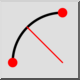
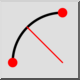
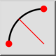
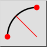

2 punten en straal
Werkbalk / icoon:
 

Menu: Tekenen > Boog > 2 punten en straal
Sneltoets: A, D
Opdrachten: arcradius | ad
Dit is een automatische vertaling.
Werkbalk / icoon:
 

Menu: Tekenen > Boog > 2 punten en straal
Sneltoets: A, D
Opdrachten: arcradius | ad
Tekent een boog met het beginpunt, eindpunt en radius.